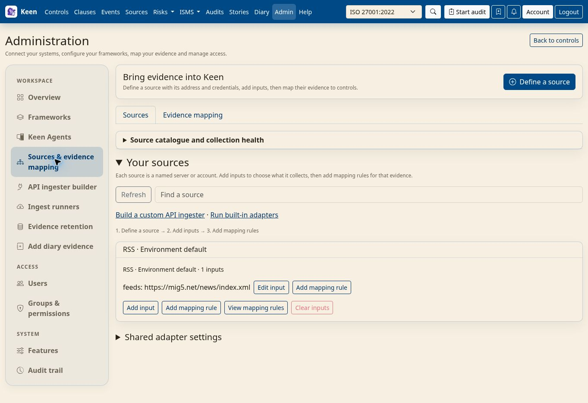
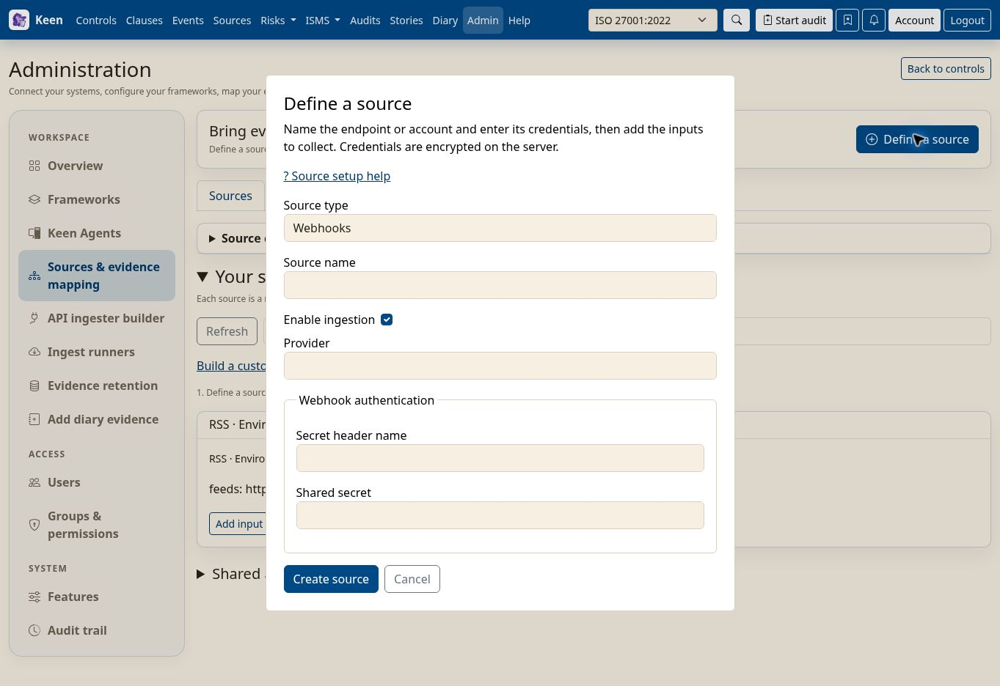
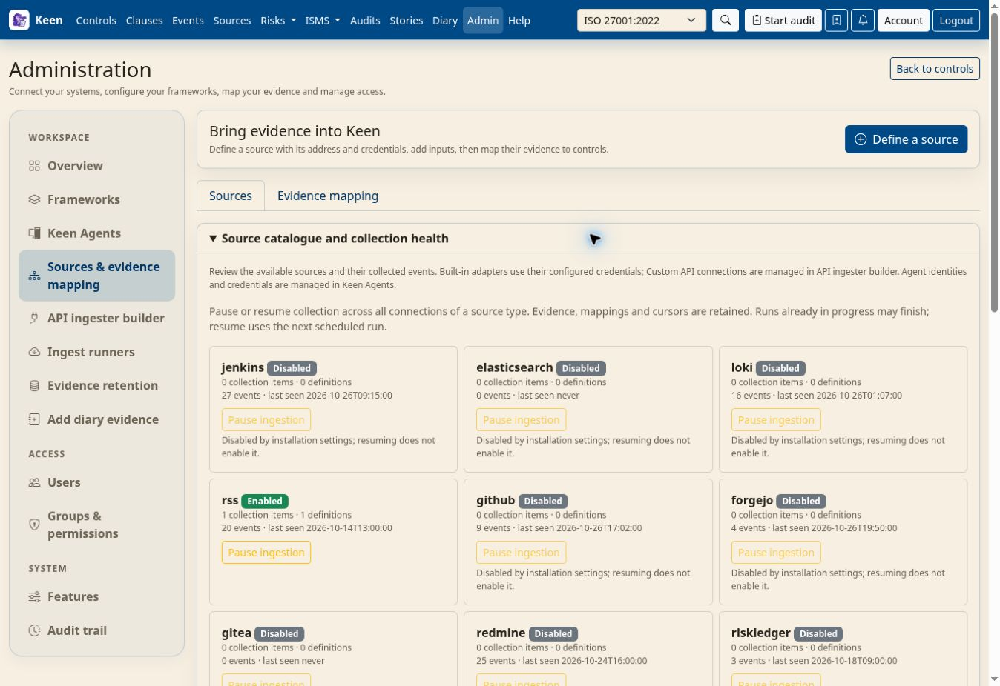

Administering Keen
Sources, connections and API ingesters
Chapter 5 of 30
Choose an evidence source
Every source has its own short chapter with the settings, the inputs it collects and the mapping advice. Built-in adapters collect from supported services; the API ingester builder configures other HTTP services; Keen Agent and webhooks receive pushed evidence; Diary evidence records human observations.
- Keen Agent / OTLP
- Jenkins
- Loki
- Elasticsearch
- Amazon CloudWatch Logs
- GitHub
- Forgejo
- Gitea
- GitLab
- Redmine
- RSS / Atom
- IMAP mail
- Taiga
- BookStack
- Google Workspace
- Incoming webhooks
- Diary evidence
- Custom API ingesters
- Risk Ledger
The Sources tab opens by default. Expand Source catalogue and collection health there to review collection status or pause ingestion. Use Evidence mapping to create and manage rules.
Connecting a source is the same three moves every time: define the connection, add a collection, map the events. This chapter walks that path once; the source chapters above fill in the details for each service.
- Connection
- A named server or account, with its endpoint and credentials.
- Collection
- One thing Keen fetches from the connection: a repository, a query, a feed, a project.
- Mapping rule
- Which events from a collection count as evidence, and for which controls or clauses.
Sources, collections and evidence mapping
The Workspace menu separates the jobs. Sources & evidence mapping configures connections and collections and maps their events to controls and clauses. API ingester builder defines custom API requests. Ingest runners starts a built-in adapter immediately, and Diary evidence records human-entered evidence.


Define a source
- In the Sources view choose Define a source, enter its name, endpoint and credentials, and save. Credentials saved here are encrypted with
KEEN_INTEGRATION_SECRET_KEY. - Choose Add collection and pick the repositories, organisations, users, feeds, queries or other inputs to fetch. A collection saves without a mapping rule.
- After saving, use Collect now to fetch a first batch, then Add mapping rule to decide what the events prove. View definitions filters the mapping library to this source.


Environment-backed sources appear once they have configured inputs; file-managed sources use their deployment configuration. Webhook sources display a receiving URL and can be mapped directly, and custom API ingesters keep their dedicated builder.
Going deeper: what deleting or clearing a connection removes
Deleting an API connection removes its collectors, revisions, run history, source-specific definitions and automatic evidence-to-control links. Clearing a built-in connection empties its saved collection lists and removes its source-specific definitions and automatic links. The confirmation shows the affected definitions and counts and requires the connection name. Events, artifacts, manual and imported mappings and shared cross-source rules remain, and environment credentials are unchanged. API runs in progress block deletion; wait for completion and preview again, and review a changed preview before removing.
Connect and verify a source
- Follow the source chapter to enable the adapter and configure credentials. Apply environment settings to the API, worker and beat containers, then recreate the affected containers.
- Open Sources & evidence mapping, find the source in the catalogue or the connection view, and choose Add collection. Select the remote objects to collect.
- Use Ingest runners for a small test. Inspect the collection result and one actual event.
- Create a mapping from that event, or use the mapping builder, and preview its matches before saving.


Configure a collection before you rely on a mapping. Collection inputs decide what Keen fetches, and mapping rules attribute the collected events to controls or clauses. An all-events mapping still needs a configured collection.
Web-UI configuration overrides the corresponding YAML file once saved; administrators can manage YAML before creating an override, and each source chapter names its file. Rules and YAML explains mapping export, Scheduling and pauses covers run timing and saved cursors, and Storage and retention covers evidence artefacts.
Named source connections
Each connection holds an endpoint or account, its authentication and its input definitions. Loki URLs and optional authentication belong to the connection while LogQL queries are inputs; Google Workspace connections hold a service-account JSON credential and delegated administrator; CloudWatch connections hold an AWS region and account credentials.
The KEEN_<TYPE>_ENABLED flag gates all connections of that type, KEEN_WEBHOOKS_ENABLED gates webhook receipts, and a named connection can also be disabled individually. Scheduled polling uses the source type's cadence; Run connection starts a manual run through the same gates.
Going deeper: credentials, files and identities
Database credentials are encrypted using KEEN_INTEGRATION_SECRET_KEY; set the same key on API and worker and preserve it for recovery. Blank credential fields preserve saved values on edit. KEEN_SOURCE_CONNECTIONS_FILE supplies additional YAML or JSON connections using environment-variable or secret-file references; mount the configuration and referenced secrets on API and worker. Existing environment settings supply the Environment default connection. Connection identities scope cursors, event deduplication, artifact keys and webhook replay protection.